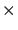
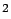

Siguiente: El paquete vectorial
Subir: Arquitectura de paquetes
Anterior: El paquete capas
Índice General
Es necesario determinar cuál de las dos dos formas de
representar la información GIS es la más apropiada para los
diferentes datos que se manejan en el programa. Dado que los datos
de altura de terreno deben abarcar toda la región de estudio, es
razonable representarlos mediante un formato de datos tipo raster.
En ese caso, el valor correspondiente a cada celda almacenará el
promedio de alturas de terreno del área geográfica representada por
dicha celda. Lo mismo sucede en el caso de las predicciones, salvo
que allí el valor de las celdas será la potencia mediana calculada
para el sector representado por la celda.
GeoTools dispone de una herramienta para el manejo de datos del tipo
raster, que se denomina org.geotools.gc.GridCoverage. Un
GridCoverage permite almacenar una grilla de datos (usualmente en
dos dimensiones), y referenciarlos mediante coordenadas. Está
delimitado por un rectángulo (llamado envelope), y es capaz
de devolver un valor en cada uno de los puntos dentro de dicho
rectángulo. Por ejemplo, si el envelope es de 10 m  10 m y
la matriz de datos es de 10 10, el área total se dividirá
en 100 cuadrados de 1 m, y dentro de cada uno de estos cuadrados
los puntos del GridCoverage tendrán el mismo valor.
Para la representación de los datos tipo raster se creó la clase
Grilla, creada para solventar algunas dificultades de acceso
a los datos que implicaba el trabajar directamente con el
GridCoverage. La misma contiene, entre otros atributos, uno de la
clase java.awt.image.WritableRaster con los datos y el
GridCoverage correspondiente; además provee una serie de métodos
útiles e implementa la interfaz ElementoCapa, que le permite ser
integrado al mapa. No es trivial la creación de un feature a
partir de datos del tipo raster, ya que es un concepto asociado
directamente con una geometría. La solución para poder hacerlo
consiste en crear un polígono (más específicamente un rectángulo),
que representa el contorno de la grilla, y agregarle un atributo de
tipo GridCoverage para así formar el feature necesario para
constituir la capa.
Siguiente: El paquete vectorial
Subir: Arquitectura de paquetes
Anterior: El paquete capas
Índice General
SAPO